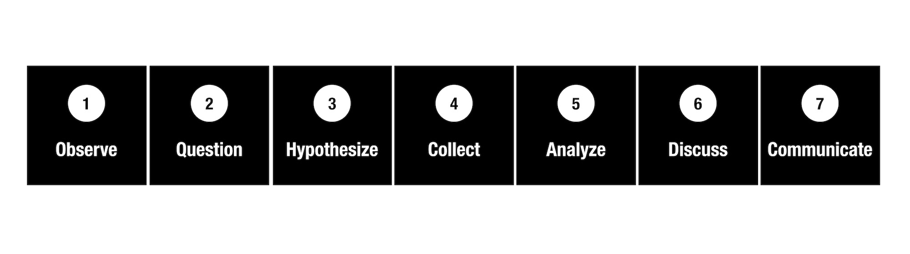

Patterns
«Natural Patterns», unveiling the relationship between Science, Nature and beyond
«Natural Patterns» is a project that delves into the relationship between Science and Nature. By means of a system that promotes the observation of Nature as a canvas to present the research process, we are able to unveil the implications of science in the formation of patterns and their impact, beyond natural science, in art, design, architecture or music.
March 1st, 2018

Natural patterns in the wild. Fractals in trees at Pacific Spirit Regional Park (Vancouver, Canada). Julián Vicens CC-BY 4.0
We are surrounded by patterns. Patterns are present in Nature and we can find a lot of them in very different contexts: mountains, deserts, oceans, the skies or even parks and streets. We can observe cracks in trees and fractals in leaves, spirals in flowers and flows in water or in the dunes of a desert.
Nature is designed following patterns that science study with the goal of understanding the nature of Nature. Howbeit, patterns have a presence beyond Nature. In fact, most human designs are based on patterns, following the principles of Nature. We can see that in arts, architecture or even in common objects such as lamps or phones.

Natural patterns in architecture. Marina Towers with a corncob pattern (Chicago, USA). Julián Vicens CC-BY 4.0
We propose a system of interaction with Nature in which patterns are the core that highlight and connect science and Nature in different contexts of our day-to-day life in a broader sense (architecture, art, objects, etc.). The flow of the system illustrates the main steps of the scientific method, and the activities and microtasks are designed to interact not only with Nature, but also with other participants. The core mechanisms of this system try to promote participation and engage the users, motivating them by means of a gamified system.
«Natural Patterns» system. «Natural Patterns» proposes a step-by-step guide to the scientific research methodology, inviting the public to observe, question, hypothesize, collect, analyze, discuss and communicate. Julián Vicens CC-BY 4.0
«Natural Patterns» provides a platform to study how citizen science can have a positive impact in science disposition in the long term and how to engage the general public in science activities out of the lab. We want to learn if the main design features of «Natural Patterns» help to create strong ties among citizens, science and Nature. Because, in essence, by connecting us to nature and by promoting environmental observation we can understand human impact in Nature and the importance of science to find solutions to social problems.

«Natural Patterns» system. «Natural Patterns» application with different typologies of patterns that we can observe in Nature. Julián Vicens CC-BY 4.0
This work started during my stay in Delta Lab (Northwestern University) with Dr. Haoqi Zhang on Summer ‘16. The system is currently in beta testing. Contribute with samples of natural patterns using the #naturalpatterns hashtag in Instagram.